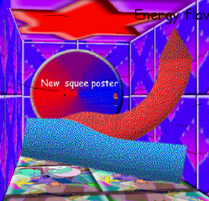

Paint Roller appears as a very poorly modeled paint roller-like object. It has a pointy red handle and a blue roller-like head. Random lines float around it.
Gallery

Trivia
Paint Roller was built by Moldy to paint the school.
Paint Roller likes Ladybug but can't express it's feelings due to the language barrier.
Paint Roller can move fast enough to make strong winds.